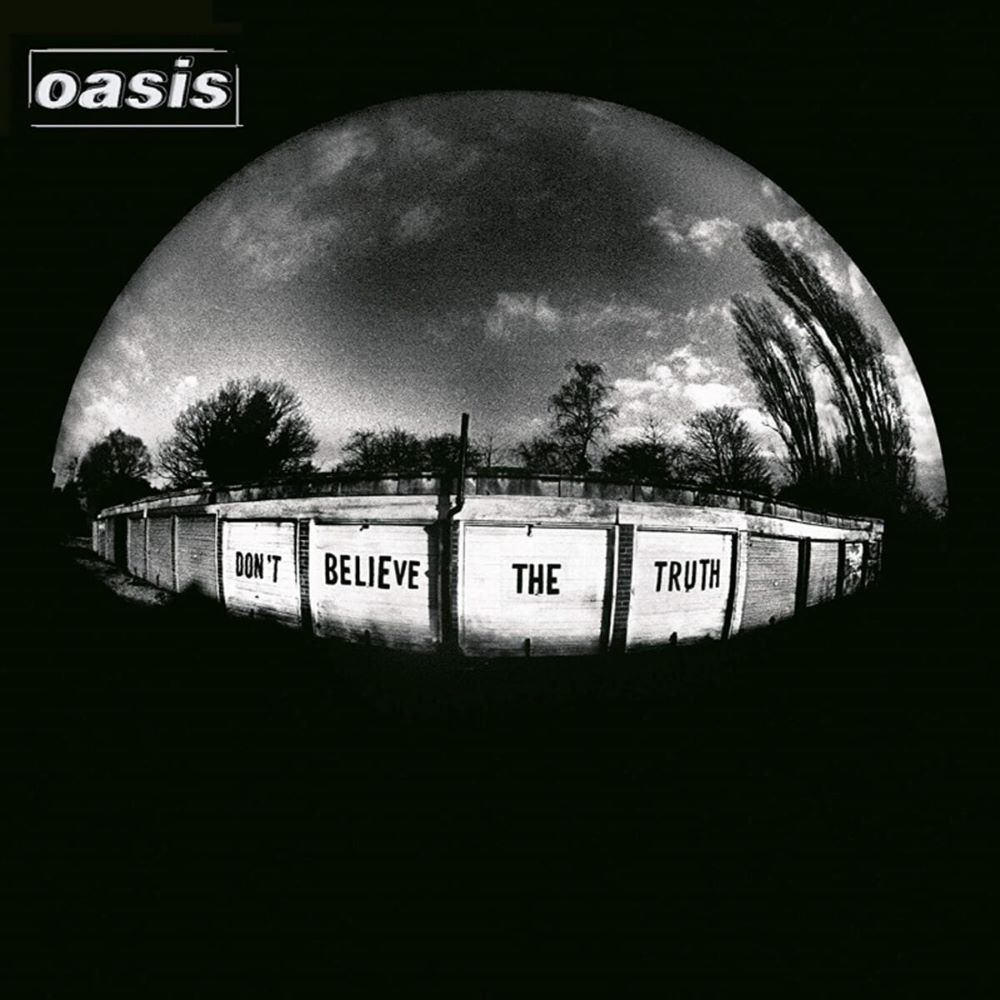

Oasis's sixth studio album, "Don't Believe the Truth," released in 2005, marked a rejuvenation for the band and a return to a more collaborative songwriting process. With a lineup that had stabilized after previous changes, the album showcased a renewed sense of purpose and creativity.
The lead single, "Lyla," set a spirited tone for the album with its energetic guitar riffs and catchy hooks. The track became a commercial success and exemplified Oasis's ability to craft radio-friendly rock songs. "The Importance of Being Idle," another notable single, showcased a more acoustic and introspective side of the band, featuring lead vocals from Noel Gallagher.
One of the defining features of "Don't Believe the Truth" was the increased involvement of other band members in the songwriting process. Contributions from guitarist Gem Archer and bassist Andy Bell added new dimensions to the album's sound, creating a more dynamic and varied listening experience.
Tracks like "Let There Be Love" and "Part of the Queue" demonstrated a willingness to experiment with different musical styles, including orchestral arrangements and acoustic elements. The album as a whole struck a balance between the familiar Oasis sound and a willingness to explore new sonic territories.
"Don't Believe the Truth" received positive reviews for its cohesiveness and the band's ability to recapture some of the spirit of their earlier work. While it may not have reached the same commercial heights as albums like "(What's the Story) Morning Glory?" it contributed to Oasis's ongoing legacy, showcasing their resilience and adaptability in the ever-evolving landscape of rock music.

Oasis 6rd Album Don't Believe The Truth
 ?
?